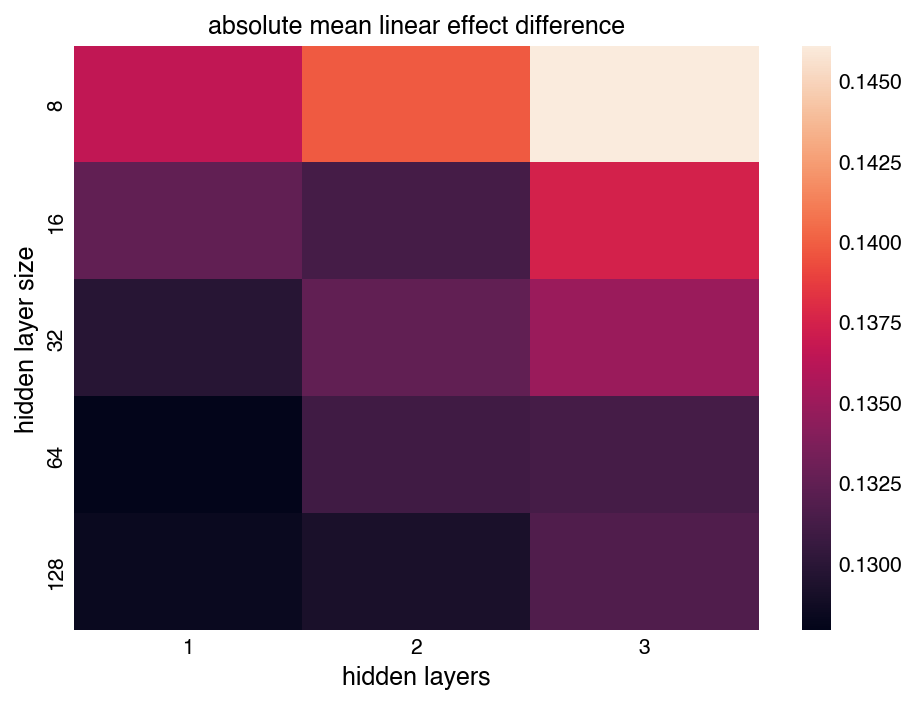

Every year, the central CrossFit organization runs a global fitness competition. The competition has a few different stages:
So, the Open and Games have happened every year for many years now. The Open has been going on since 2011 and the Games have been running since 2007. My understanding is that the Games started as a very informal, low-stakes event somewhere in California. As the CrossFit brand grew, so did the event. The prize purse at the 2023 Games was $2,945,000 and the winners in the Men's and Women's divisions both took home $315,000. The top athletes in the main divisions are basically all sponsored. There's a bunch of highly produced media. Sometimes it's even on national (US) TV.
Fitness competitions are different than almost any other athletic competition, though, because the workouts change. An individual competition, like the 2023 Games, is made up of several different workouts. These workouts span a range of different physical tasks like weight lifting, running, gymnastics, etc., in various combinations and mixtures. Together, they are meant to be a complete test of fitness, broadly defined.
Occasionally, an individual workout is repeated in different competitions, but generally, each workout is totally new or is a variation on a previous one. Interestingly, each workout is also unknown to the competitors until just before they do the workout. So, although there are clear patterns and emphases, the competitors don't know precisely what they're training for during the season. They just know to be strong, fit, good at gymnastics, etc., all at the same time.
These competitions have generated a lot of data. To my knowledge, nobody is doing anything with the data, so I thought I would.
For every workout in every event, we have the workout description, which looks something like this:
For time:
1,000-meter row
Then, 5 rounds of:
25 Pull-ups
7 Push Jerks (135/85 lb.)
Then we have every athlete's finishing rank for the workout along with their height, weight, and age. We also have every athlete's overall ranking for the entire competition. Further, there are multiple divisions of athletes competing in each event. The Open is divided by gender and then by several different age divisions. The Games also has a bunch of divisions, but because they don't always do the same workouts as the main Men and Women's divisions, I keep only these main divisions. The schematic below depicts the structure of the data for one season of competition.
A huge number of people participate in the open. I don't know how many, but many thousands, at least. However, the Open typically only includes 3-5 workouts every year. In contrast, a small number of the fittest people compete at the Games, but there are a lot more workouts. Usually, there are >10 workouts at the Games.
The first thing I did was generate embedding vectors for each workout description, using OpenAI's API. I used the text-embedding-3-large model, which generates 3,072-dimensional vectors that encode the semantics/meaning of each workout description.
The distances between these vectors represent how similar they are in meaning. This heatmap shows the distances between all workouts that have ever taken place in the Open and Games. Brighter colors indicate more similar workout descriptions. Because this matrix is so big, I didn't put it here in the main document.
There are some interesting patterns. First, you can find the occasional bright yellow square. These are repeat workouts. Their descriptions are exactly (or very nearly) identical, so their embedding vectors are also almost identical (zero distance). Second, there are occasional chunks of Games workouts that are very unlike all the other workouts in the record. For example, the first 5 workouts in 2012 were, compared to all the other workouts, weird. These include the Pendleton workouts, Obstacle Course, Broad Jump, and Ball Toss. Third, the block in the lower right, where the Open workouts are, is brighter than the rest of the matrix. This means that the Open workouts are generally more similar to each other than they are to any Games workouts, with some exceptions. You can look around for other patterns, as well.
Embedding distances can also be used to cluster the workouts. The interactive figure below shows just that. There is a central mass of poorly differentiated workouts, but also some clear clusters on the periphery. For example, the group on the left represents max lifts and lifting ladders. There is a green group in the upper right that includes two instances of Murph, the Atalanta workout, and the "Beach" workout in the 2011 Games, which I had never seen before but is quite similar to Murph if you read the description. There is another green cluster on the right that seems to include all the running-dominant workouts.
Finally, I asked GPT-4 to concisely summarize the commonalities in each cluster of workouts. The plot below shows how many workouts are in each cluster, how many are Games vs Open workouts, and indicates what the overall summary is for each cluster if you hover your mouse over the bars. Many of the summaries are not very informative, but some of them are. For example, cluster 0 on the left is all Games workouts with rowing. Cluster 1 includes workouts with thrusters and either pull-ups or burpees. It's also clear that there is a distinction between Games and Open workouts. Almost all the orange Open workouts are in only a few clusters. This observation aligns with the observation above in the heatmap, where Open workouts are more brightly colored, so more similar to each other than to almost any Games workouts.
Next, I wanted to see if there are regularities in workout descriptions over the course of each year's Games event. If you look at the Games workout descriptions, the first few for each year tend to include a long running/swimming event, but it's not clear if there are any trends, aside from that.
To get a sense of possible trends, I computed the distance between each Games workout's embedding vector and the mean of all the Games embeddings. The plot below shows these deviations, with "time" (t) on the horizontal axis and each year of competition on the vertical axis. This "time" axis just indicates the position of each workout between the beginning and end of the event, where t=0 is the first workout and t=1 is the last workout. There's no really obvious pattern here, at least not to me. There are only 3 workouts in the very first iteration of the competition, 2007, then the density increases. The 2020 Games has a lot of workouts because there were two separate stages (because of Covid). The 5th workout in 2022, which was just "Max Jerks," was pretty unusual.

The plot below, however, shows the same information but with the deviations on the vertical axis instead of the year. Now it looks like there may be a trend. It seems like the average deviation is decreasing over the course of the Games, with more unusual workouts at the beginning and more average workouts toward the end.
To evaluate this trend more thoroughly, I fit a Bayesian cubic spline to these deviations. This model allows a flexible representation of the mean deviation over the course of the event. The plots below show the results, including the "observations" on the left and excluding them on the right. The "observations" were also standardized before fitting the model.
I fit models with different degrees of freedom (DoF), from 4 to 8, which indicates how many equally spaced segments of the spline there are. The higher DoF models are noisy and model comparison using expected pointwise predictive density indicates that 5 DoF is the best. In any case, there is a clear trend. Events later on in Games competitions are less likely to be unusual and surprising. It's hard to say why, but I suspect the final event is more predictable because it's decisive. If several athletes are in contention for first place, the final event crowns one of them, and it looks bad for that event to be bizarre and potentially advantage some athletes significantly.
Just for reference, the 5 DoF spline model is also shown below with the uncertainty in the model mean. As expected, there is more uncertainty at the edges of the interval. There is still, however, a clear downward trend over the course of the Games.
Is it an advantage to be short or tall? Do heavier athletes tend to succeed in elite CrossFit competitions? How much does age influence success? These are probably the most interesting questions that can be addressed with the data.
To address these questions, I use multiple linear regression. For the regressions, I use the inverse normal transformation of rankings for workouts and whole competitions. This transformation converts ranked data, like what we have for individual events and for competitions overall, to a normally distributed set of values based on the rankings. This is helpful because it's otherwise difficult/cumbersome to model ranked data, especially if the number of observations is large (like in the Open). It also helpful because the scoring format for different workouts is so diverse. Some workouts are timed, others are for reps, others are for maximum weight, sometimes athletes are time capped, and so on... Cleaning the raw scores is more of a project than I want and we can get good information out of the rankings.
I also standardize the height, weight, and age within each division but across all events and competitions. I drop cases where any of the data are missing. I also take only the top 500 overall finishers for each Open workout. This decision—how many athletes to include in regressions—was ultimately subjective. With too few athletes, the results are noisy. With too many, they include athletes who are more casual competitors and may have unreliable scores. I settled on 500 as a reasonable intermediate case, which will mostly include only very fit/serious athletes, but will include enough of them for clear regression effects.
As an initial example, the plot below shows regressions for height, weight, and age against the transformed rankings for Workout 1 of the 2019 Open (19.1) for the Women's division. The data are shown in the background histograms. In this case, each regression is just an individual regression, not multiple regression, without accounting for the other effects yet. However, there are clear relationships. Both height and weight have a positive regression coefficient, indicating that taller and heavier women were more successful at 19.1, on average. I chose this workout for the example deliberately, because the effects are so large. It consisted of rowing and wall-balls, both movements that are usually assumed to advantage bigger competitors.
In the Open, many divisions of athletes are competing in the same workout. Although the workouts are often scaled for the older divisions, with less weight or slightly less challenging movements, they are very similar. The elite Men's division is doing a similar workout to the Men's 60+ division. So, for the 16 or so different divisions, we have up to 500 rankings for which we can do multiple linear regression. This is a textbook application for hierarchical regression, where we partially pool across the divisions, including a hyperprior for the average effect of height, weight, and age. Going even further, we can include correlations for these effects, across the divisions, in a correlated effects model.
I did just that, for the overall rankings in each year of the Open, and found some interesting results. The plot below is a forest plot showing the results of correlated effects models for each year of the open. The colored intervals summarize the marginal posterior distributions for the mean effects across all divisions of each year's rankings. The thinner lines show the 94 % highest density interval (HDI) of the posteriors, the thicker line shows the 50 % interval, and the central dot shows the posterior mean.
In the first year of the Open (2011), height was not strongly associated with athlete's overall rankings in the Open. Weight was, with lighter athletes performing better, on average. There was no preference for older or younger athletes. However, over the years, taller athletes were disadvantaged, heavier athletes were advantaged, and older athletes were consistently disadvantaged. For the fittest people in the top 500 finishers, being shorter and heavier (stronger) became a significant advantage starting in about 2016. This fits with most people's assumptions about who succeeds in the Open. It generally includes workouts with pull-ups, thrusters, burpees, snatches, cleans, deadlifts, etc... things that shorter/stockier people are usually better at. This isn't always true (see 19.1 for example) but on average we have clear evidence that overall success at the open advantages shorter, heavier, and younger competitors (on average).

I also ran the same correlated effects models for each year of the Games and the results are shown below. There are only two divisions in each Games competition that are doing the marquee workouts and each competition has only tens of competitors. Consequently, the mean effects are quite uncertain across only two divisions. However, there are still some important observations to make. The effects of height and weight are sometimes positive and sometimes negative. If you're a tall, short, heavy, or light athlete, some years favor you and others disadvantage you. Generally, however, being older has a negative impact on overall ranking at the Games.
There are some outlier years. For example, in 2019 the shorter, heavier men performed significantly better than their counterparts. Interestingly, there were cuts after workout 5 in the 2019 Games, which was the "Mary" workout (pistols, handstand pushups, and pull-ups). That may have tilted the final rankings toward shorter, stronger athletes by cutting the bigger guys. It's notable that the same effects are not observed for the Women in 2019.

I also wanted to see if it's possible to predict the regression coefficients above, given the embedding vector for a workout's description. Essentially, can we predict the effects of height, weight, and age just from the written description of the workout?
I considered using Gaussian processes (GP) for this task, but it's a little complicated. First of all, the input dimensionality is very large for the embedding vectors (3072). The dimensionality can be reduced, but at some cost. Second, the predictor needs to generate three values for each embedding, so it would have to be a "multi-task" GP, which I'm not very familiar with.
Instead of a GP, I trained a small neural network using PyTorch. I only used workouts from the Open because the effects of height, weight, and age are generally too uncertain for Games workouts. Essentially, the labels are not well-known for Games workouts. There are only 67 Open workouts on record, however, so the training is extremely data-limited and this whole effort is a bit silly. The results are not likely to be great, but I wanted to see them.
The model is an MLP with multiple regression at the end. It takes, as inputs, embedding vectors for workout descriptions: an N x 3072 matrix. Then it applies some number of dense layers with ELU activations before arriving at an N x 3 vector representing linear regression coefficients for each workout. These coefficients are applied to matrices of height, weight, and age for each workout and each division, generating predictions from the linear model for the transformed rankings of each athlete. The L1 loss function trains the model based on prediction errors. Because the model and data are both small, I can easily optimize the model on a CPU in around a minute in batch mode (not mini-batch). I use a small amount of weight decay in addition to dropout and Gaussian noise applied to all activations.
I use k-fold cross-validation to see which model configurations might work best. The folds are individual years, or multiple years, of Open workouts. For instance, the plot below shows training loss and validation loss when the validation set includes all Open workouts in 2023 and 2024. Again, the number of examples is extremely limited, so we expect some unusual behavior (lower validation loss than training loss). The plot below also shows the "mean effect differences," which is how different the model's predicted regression coefficients are from the coefficients we get by doing the regression directly using OLS, for each workout. Although the loss function is applied to the actual rankings, not the regression coefficients, this is the more meaningful metric.

The plot below shows the neural network's predicted regression coefficients, the OLS coefficients, and the difference for the validation set with 2023 and 2024 Open workouts. Interestingly, it does relatively well. There are significant misses, but the model captures some of the overall pattern with only ~60 examples. In this case, the model has three hidden layers with 16 dimensions each.
Doing cross-validation over all folds, a simple linear model achieves a "mean effect difference" of about 0.128, which is about the same as the model above. Models with different configurations don't do much better, either. The plot below shows model performance for different numbers of hidden layers and different hidden layer sizes. More layers seems bad, and the best model is one with only a single hidden layer with 64 dimensions.
In any case, we need more data to do this well, but it was interesting to look.